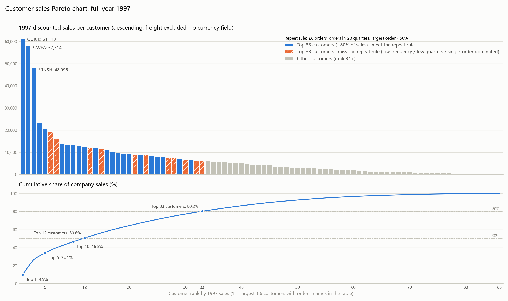

Q2 · How much do sales depend on a few customers?
Short answer
The top 1, 5 and 10 customers hold 9.9%, 34.1% and 46.5% of 1997 sales, and 33 customers make up 80.2%. The three largest (QUICK, SAVEA, ERNSH, 27.0% together) bought steadily all year.
Next step: manage QUICK, SAVEA and ERNSH as key accounts, and review the 11 head customers whose 1997 sales came from few orders, few quarters or one large order before treating their sales as a recurring baseline.
Why it matters
If a few customers carry most of the revenue, losing or shrinking one of them is a real risk. Knowing who they are, and how steadily they bought, tells account managers where attention matters most.
Method
Data and period: full year 1997 by order date (the only complete year), 408 orders. Grain and joins: order lines joined to Orders by OrderID; discounted sales summed per CustomerID; orders counted as unique OrderIDs; all 91 customers kept (5 without 1997 orders).
Sorting customers from largest to smallest gives the Pareto curve: how quickly sales accumulate. For the top 33 customers (about 80% of sales) we then check whether their 1997 buying was spread out — the repeat rule: at least 6 orders, orders in at least 3 quarters, and no single order of 50% or more of the customer's sales — or concentrated.
Formulas, definitions and analysis choices
Share_i = Sales_i / Σ Sales HHI = Σ Share_i² equivalent customers = 1 / HHI Repeat rule: Orders ≥ 6 and quarters with orders ≥ 3 and largest order / Sales_i < 50%Six orders is the 75th percentile of 1997 order counts. The top 33 are the customers needed to reach 80% of cumulative sales, including the one that crosses it. Tags: low frequency (fewer than 6 orders), few quarters (fewer than 3), single-order dominated (largest order ≥ 50%).
23 reconciliation checks, all passed (q2_validation.csv).
Evidence

Concentration measures
| Measure | Value |
|---|---|
| Top 1 customer (QUICK) | 9.9% |
| Top 5 customers | 34.1% |
| Top 10 customers | 46.5% |
| Customers needed for 50% of sales | 12 |
| Customers making up ~80% of sales | 33 (80.2%) |
| Equivalent number of equal-size customers (1/HHI) | 27.3 |
Buying patterns of the top 33 customers
| Group | Customers | Sales | Share of company sales | Share of top-33 sales | Median orders | Median largest-order share |
|---|---|---|---|---|---|---|
| Head · meets repeat rule | 22 | 384,351.00 | 62.3% | 77.7% | 8 | 27% |
| Head · misses repeat rule | 11 | 110,400.42 | 17.9% | 22.3% | 5 | 41% |
| Rest · meets repeat rule | 1 | 3,179.50 | 0.5% | — | 6 | 42% |
| Rest · misses repeat rule | 52 | 119,154.28 | 19.3% | — | 2 | 60% |
| No 1997 orders | 5 | 0.00 | 0.0% | — | 0 | — |
Findings
- The top 1, 5 and 10 customers account for 9.9%, 34.1% and 46.5% of 1997 sales. 12 customers make up half of sales and 33 make up 80.2%.
- The three largest customers (QUICK, SAVEA, ERNSH) hold 27.0%. In 1997 each placed 14–17 orders in all four quarters, and no single order exceeded 18% of its annual sales.
- Of the top 33, 22 meet the repeat rule (62.3% of company sales) and 11 do not (17.9% of company sales, or 22.3% of the top-33 sales).
- Those 11 differ: six only have fewer than six orders; RATTC is dominated by one order (54%); SIMOB, GREAL, CHOPS and SUPRD miss two or three rules.
Business interpretation and next steps
- Key accounts: treat QUICK, SAVEA and ERNSH as key accounts — they carry the largest share of revenue — and learn their buying cycle and product mix.
- Head customers that miss the rule: handle each tag differently: learn the buying cycle of low-frequency customers, the nature of single large orders, and when few-quarter customers buy. Do not treat their 1997 amounts as a recurring baseline.
- The remaining 53 customers with 1997 orders hold 19.8% of sales; standardised, lower-cost account care is a reasonable starting point.
These are candidate directions for further evaluation, not decisions the data can settle on its own.
Limitations and boundaries
- One year of data: nothing here says whether these patterns hold across years; 1997 sales are not lifetime value, and no churn is inferred.
- The repeat rule uses analysis thresholds; the sensitivity table shows how much the groups move.
- No cost or margin data, freight is excluded, and related accounts of one group are not merged.
Supplementary material and downloads
Supplementary charts and tables
Top 12 customers (together just over 50% of 1997 sales)
| Rank | Customer | Company | Country | Sales 1997 | Share | Cumulative | Orders | AOV | Largest order share | Quarters | Group | Unmet rules |
|---|---|---|---|---|---|---|---|---|---|---|---|---|
| 1 | QUICK | QUICK-Stop | Germany | 61,109.91 | 9.9% | 9.9% | 14 | 4,365 | 17% | 4 | Head · meets repeat rule | |
| 2 | SAVEA | Save-a-lot Markets | USA | 57,713.57 | 9.4% | 19.3% | 17 | 3,395 | 11% | 4 | Head · meets repeat rule | |
| 3 | ERNSH | Ernst Handel | Austria | 48,096.26 | 7.8% | 27.0% | 15 | 3,206 | 18% | 4 | Head · meets repeat rule | |
| 4 | MEREP | Mère Paillarde | Canada | 23,332.31 | 3.8% | 30.8% | 10 | 2,333 | 39% | 4 | Head · meets repeat rule | |
| 5 | HUNGO | Hungry Owl All-Night Grocers | Ireland | 20,454.40 | 3.3% | 34.1% | 10 | 2,045 | 24% | 4 | Head · meets repeat rule | |
| 6 | RATTC | Rattlesnake Canyon Grocery | USA | 19,383.75 | 3.1% | 37.3% | 6 | 3,231 | 54% | 4 | Head · misses repeat rule | single-order dominated |
| 7 | SIMOB | Simons bistro | Denmark | 16,232.41 | 2.6% | 39.9% | 5 | 3,246 | 69% | 4 | Head · misses repeat rule | low frequency, single-order dominated |
| 8 | BERGS | Berglunds snabbköp | Sweden | 13,849.01 | 2.2% | 42.2% | 10 | 1,385 | 28% | 4 | Head · meets repeat rule | |
| 9 | HILAA | HILARIÓN-Abastos | Venezuela | 13,482.74 | 2.2% | 44.3% | 10 | 1,348 | 23% | 4 | Head · meets repeat rule | |
| 10 | FOLKO | Folk och fä HB | Sweden | 13,314.67 | 2.2% | 46.5% | 7 | 1,902 | 33% | 3 | Head · meets repeat rule | |
| 11 | LEHMS | Lehmanns Marktstand | Germany | 13,076.13 | 2.1% | 48.6% | 8 | 1,635 | 28% | 3 | Head · meets repeat rule | |
| 12 | WARTH | Wartian Herkku | Finland | 12,262.94 | 2.0% | 50.6% | 10 | 1,226 | 22% | 4 | Head · meets repeat rule |
Which rule each head customer misses
| Unmet rules (exact combination) | Customers | Who | Share of company sales |
|---|---|---|---|
| few quarters, single-order dominated | 1 | GREAL | 1.4% |
| low frequency | 6 | RICSU, FOLIG, SEVES, BOTTM, LINOD, HANAR | 8.7% |
| low frequency, few quarters | 1 | CHOPS | 1.1% |
| low frequency, few quarters, single-order dominated | 1 | SUPRD | 1.0% |
| low frequency, single-order dominated | 1 | SIMOB | 2.6% |
| single-order dominated | 1 | RATTC | 3.1% |
Sensitivity to the repeat-rule thresholds
| Min orders | Min quarters | Customers meeting rule | Share of company sales | Share of top-33 sales |
|---|---|---|---|---|
| 5 | 3 | 28 | 71.0% | 88.5% |
| 5 | 4 | 16 | 53.2% | 66.4% |
| 6 | 3 | 22 | 62.3% | 77.7% |
| 6 | 4 | 15 | 51.3% | 64.0% |
| 7 | 3 | 19 | 58.0% | 72.3% |
| 7 | 4 | 13 | 48.5% | 60.4% |
Download the full result tables (CSV)
- q2_concentration_summary.csv — Top-N shares, HHI and other concentration measures
- q2_customer_raw_precision.csv — All 91 customers, full precision
- q2_customer_table.csv — All 91 customers, rounded, Chinese headers
- q2_order_sales_1997.csv — 1997 order-level sales
- q2_segment_summary.csv — Segment totals
- q2_threshold_sensitivity.csv — Repeat-rule threshold sensitivity
- q2_unmet_rule_breakdown.csv — Head customers missing the repeat rule, by rule
- q2_validation.csv — Reconciliation checks (expected, actual, pass)
- spotcheck_RATTC_lines.csv — Spot-check detail
CSV files are UTF-8 with BOM; some headers are in Chinese.